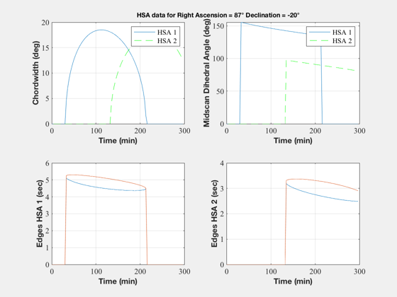
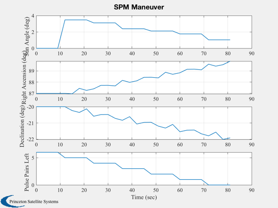
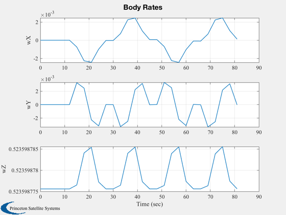
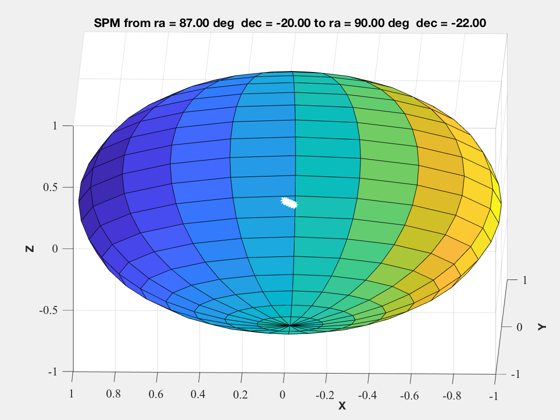
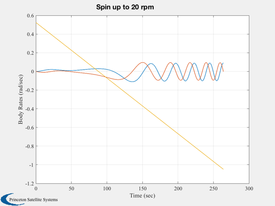
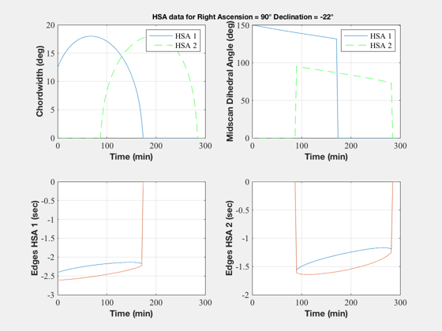
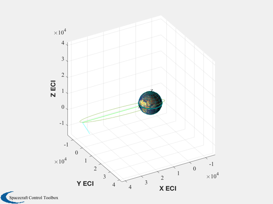
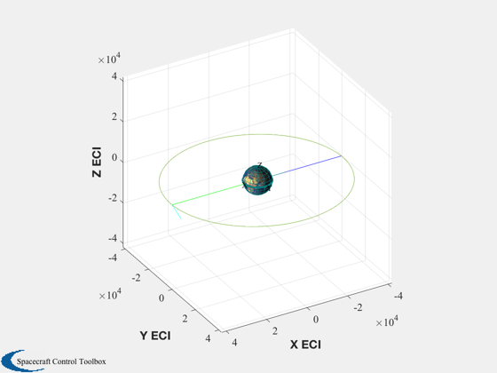
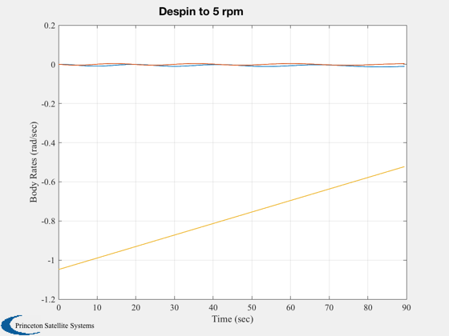
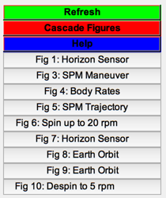

Simulates transfer orbit for ComStar.
------------------------------------------------------------------------
See also TrnsfOrb, ATTDataT, SPMDataT, DlVDataT, SpnDataT, IntDataT,
Database
------------------------------------------------------------------------
Contents
Units
units = ['mks';'deg';'rpm'];
iSpinUp = [1 2];
iSpinDown = [3 4];
iFull = [1 2 3 4 5 6 7 8];
database = 'ComStar';
dateStart = [1996 3 21 0 0 0];
disp('----------------------------------------------------------------')
disp('- The Transfer Orbit Sequence -')
disp('----------------------------------------------------------------')
k = 0;
a = [];
mET = [];
k = k + 1;
elements = [24777.670 26.05*pi/180 0 pi 0.70215 0];
rA = 87;
dec = -20;
w = [0;0;5]*pi/30;
hW = 0;
fuelMass = [117.8944 117.8944];
event = 'Initialize';
eventName = 'Orbital elements at insertion';
mET(k,:) = [0 0 0];
x = IntData(elements,rA,dec,w,hW,fuelMass);
a(k,1:length(x)) = x;
k = k + 1;
event = char(event,'Set Inertia');
eventName = char(eventName,'Insertion Inertia');
mET(k,:) = [0 0 0];
a(k,1:10) = abs('TO Inertia');
k = k + 1;
event = char(event,'Set CM');
eventName = char(eventName,'Insertion CM');
mET(k,:) = [0 0 0];
a(k,1:5) = abs('TO CM');
k = k + 1;
event = char(event,'Attitude Data');
eventName = char(eventName,'Collect HSA and SSA data-REV 1');
mET(k,:) = [2 0 0];
a(k,1:2) = ATTDataT(180,100);
k = k + 1;
event = char(event,'SPM');
eventName = char(eventName,'SPM Trim to AKM-REV 1');
mET(k,:) = [6 0 0];
x = SPMDataT(iFull,0.2,90,-22);
a(k,1:length(x)) = x;
k = k + 1;
event = char(event,'Spin Change');
eventName = char(eventName,'Spin up to 20 rpm');
mET(k,:) = [12 0 0];
x = SpinDataT([0;0;1],20,iSpinUp);
a(k,1:length(x)) = x;
k = k + 1;
event = char(event,'Attitude Data');
eventName = char(eventName,'Collect HSA and SSA data-REV 2');
mET(k,:) = [14 0 0];
a(k,1:2) = ATTDataT(180,100);
k = k + 1;
event = char(event,'DeltaV');
eventName = char(eventName,'AKM!');
mET(k,:) = [37 44 13.2];
a(k,1) = DlVDataT(1.6711);
k = k + 1;
event = char(event,'Spin Change');
eventName = char(eventName,'Despin to 5 rpm');
mET(k,:) = [38 0 0];
x = SpinDataT([0;0;1],5,iSpinDown);
a(k,1:length(x)) = x;
----------------------------------------------------------------
- The Transfer Orbit Sequence -
----------------------------------------------------------------
Simulate the transfer orbit
TransferOrbit(event,mET,a,eventName,dateStart,database,units)
TimeGUI('close');
Figui
1 0: 0: 0.00 Orbital elements at insertion
2 0: 0: 0.00 Insertion Inertia
3 0: 0: 0.00 Insertion CM
4 2: 0: 0.00 Collect HSA and SSA data-REV 1
5 6: 0: 0.00 SPM Trim to AKM-REV 1
6 12: 0: 0.00 Spin up to 20 rpm
7 14: 0: 0.00 Collect HSA and SSA data-REV 2
8 37:44:13.20 AKM!
9 38: 0: 0.00 Despin to 5 rpm
-------------------------------------------------------------------
- Collect HSA and SSA data-REV 1
-------------------------------------------------------------------
Mission Elapsed Time: 2: 0: 0.00
Julian Date: 2450163.6
Spin Rate = 0.00 0.00 5.00 rpm
Semi-major axis = 24777.6700 km
Inclination = 26.0500 deg
Longitude of the Ascending Node = 0.0000 deg
Argument of Perigee = 180.0000 deg
Eccentricity = 0.7022
Mean Anomaly = 66.7780 deg
Orbit Period = 10.7820 Hours
Inertia (kg-m^2)
1005.55 -0.00 -0.00
-0.00 1006.32 -0.00
-0.00 -0.00 1339.45
Right Ascension = 87.00 deg
Declination = -20.00 deg
Wheel Momentum = 0.00 Nms
Fuel Mass = 1.1789e+02 1.1789e+02 kg
Pressure = 2.4117e+06 2.4117e+06 N/m^2
azimuth =
2.541751044222412
prec =
0.060062595304755
t =
Columns 1 through 3
0 0 0
-4.800395838923293 3.187094757309022 3.187094757309022
-3.993745298116157 -3.993745298116157 3.993745298116157
Columns 4 through 6
0 0 0
-4.800395838923293 4.800395838923293 -3.187094757309022
3.993745298116157 3.993745298116157 3.993745298116157
Columns 7 through 8
0 0
-3.187094757309022 4.800395838923293
-3.993745298116157 -3.993745298116157
dTheta =
0.009111210221004
pulses =
6
Spin Precession Maneuver
------------------------
Spinrate = 5.00 rpm
Right Ascension Start = 87.00 deg
Declination Start = -20.00 deg
Right Ascension Final = 90.00 deg
Declination Final = -22.00 deg
Number of Pulses = 6
-------------------------------------------------------------------
- SPM Trim to AKM-REV 1
-------------------------------------------------------------------
Mission Elapsed Time: 6: 0: 0.00
Julian Date: 2450163.8
Spin Rate = 0.00 0.00 5.00 rpm
Semi-major axis = 24777.6700 km
Inclination = 26.0500 deg
Longitude of the Ascending Node = 0.0000 deg
Argument of Perigee = 180.0000 deg
Eccentricity = 0.7022
Mean Anomaly = 200.3340 deg
Orbit Period = 10.7820 Hours
Inertia (kg-m^2)
1005.55 -0.00 -0.00
-0.00 1006.32 -0.00
-0.00 -0.00 1339.45
Right Ascension = 90.00 deg
Declination = -22.00 deg
Wheel Momentum = 0.00 Nms
Fuel Mass = 1.1787e+02 1.1787e+02 kg
Pressure = 2.4105e+06 2.4105e+06 N/m^2
Spin Change Maneuver
--------------------
Maneuver Duration = 263.546
-------------------------------------------------------------------
- Spin up to 20 rpm
-------------------------------------------------------------------
Mission Elapsed Time: 12: 0: 0.00
Julian Date: 2450164.0
Spin Rate = 0.00 -0.00 -10.00 rpm
Semi-major axis = 24777.6700 km
Inclination = 26.0500 deg
Longitude of the Ascending Node = 0.0000 deg
Argument of Perigee = 180.0000 deg
Eccentricity = 0.7022
Mean Anomaly = 40.6679 deg
Orbit Period = 10.7820 Hours
Inertia (kg-m^2)
1005.55 -0.00 -0.00
-0.00 1006.32 -0.00
-0.00 -0.00 1339.45
Right Ascension = 90.00 deg
Declination = -22.00 deg
Wheel Momentum = 0.00 Nms
Fuel Mass = 1.1720e+02 1.1720e+02 kg
Pressure = 2.3767e+06 2.3767e+06 N/m^2
-------------------------------------------------------------------
- Collect HSA and SSA data-REV 2
-------------------------------------------------------------------
Mission Elapsed Time: 14: 0: 0.00
Julian Date: 2450164.1
Spin Rate = 0.00 -0.00 -10.00 rpm
Semi-major axis = 24777.6700 km
Inclination = 26.0500 deg
Longitude of the Ascending Node = 0.0000 deg
Argument of Perigee = 180.0000 deg
Eccentricity = 0.7022
Mean Anomaly = 107.4459 deg
Orbit Period = 10.7820 Hours
Inertia (kg-m^2)
1005.55 -0.00 -0.00
-0.00 1006.32 -0.00
-0.00 -0.00 1339.45
Right Ascension = 90.00 deg
Declination = -22.00 deg
Wheel Momentum = 0.00 Nms
Fuel Mass = 1.1720e+02 1.1720e+02 kg
Pressure = 2.3767e+06 2.3767e+06 N/m^2
-------------------------------------------------------------------
- AKM!
-------------------------------------------------------------------
Mission Elapsed Time: 37:44:13.20
Julian Date: 2450165.1
Spin Rate = 0.00 -0.00 -10.00 rpm
Semi-major axis = 41755.8363 km
Inclination = 2.0760 deg
Longitude of the Ascending Node = 359.9988 deg
Argument of Perigee = 179.9916 deg
Eccentricity = 0.0100
Mean Anomaly = -179.9902 deg
Orbit Period = 23.5876 Hours
Inertia (kg-m^2)
1005.55 -0.00 -0.00
-0.00 1006.32 -0.00
-0.00 -0.00 1339.45
Right Ascension = 90.00 deg
Declination = -22.00 deg
Wheel Momentum = 0.00 Nms
Fuel Mass = 1.1720e+02 1.1720e+02 kg
Pressure = 2.3767e+06 2.3767e+06 N/m^2
Spin Change Maneuver
--------------------
Maneuver Duration = 89.052
-------------------------------------------------------------------
- Despin to 5 rpm
-------------------------------------------------------------------
Mission Elapsed Time: 38: 0: 0.00
Julian Date: 2450165.1
Spin Rate = -0.00 0.00 -5.00 rpm
Semi-major axis = 41755.8363 km
Inclination = 2.0760 deg
Longitude of the Ascending Node = 359.9988 deg
Argument of Perigee = 179.9916 deg
Eccentricity = 0.0100
Mean Anomaly = 219.9651 deg
Orbit Period = 23.5876 Hours
Inertia (kg-m^2)
1005.55 -0.00 -0.00
-0.00 1006.32 -0.00
-0.00 -0.00 1339.45
Right Ascension = 90.00 deg
Declination = -22.00 deg
Wheel Momentum = 0.00 Nms
Fuel Mass = 1.1698e+02 1.1698e+02 kg
Pressure = 2.3656e+06 2.3656e+06 N/m^2
         